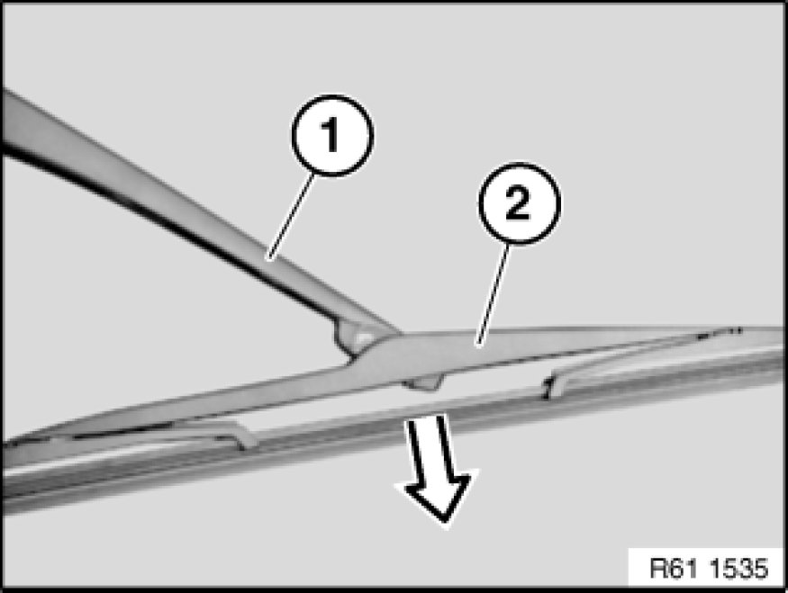

Operation CHARM
: Car repair manuals for everyone.
Home
>>
BMW
>>
2007
>>
X3 3.0si (E83) L6-3.0L (N52K)
>>
Repair and Diagnosis
>>
Wiper and Washer Systems
>>
Wiper Blade
>>
Service and Repair
>>
Removing and Installing/Replacing Rear Window Wiper Blade
Removing and Installing/Replacing Rear Window Wiper Blade
61 62 020 - Removing and installing/replacing rear window
wiper blade

Fold
wiper arm
(1) away from rear window.
Unclip
wiper blade
(2) in direction of arrow.